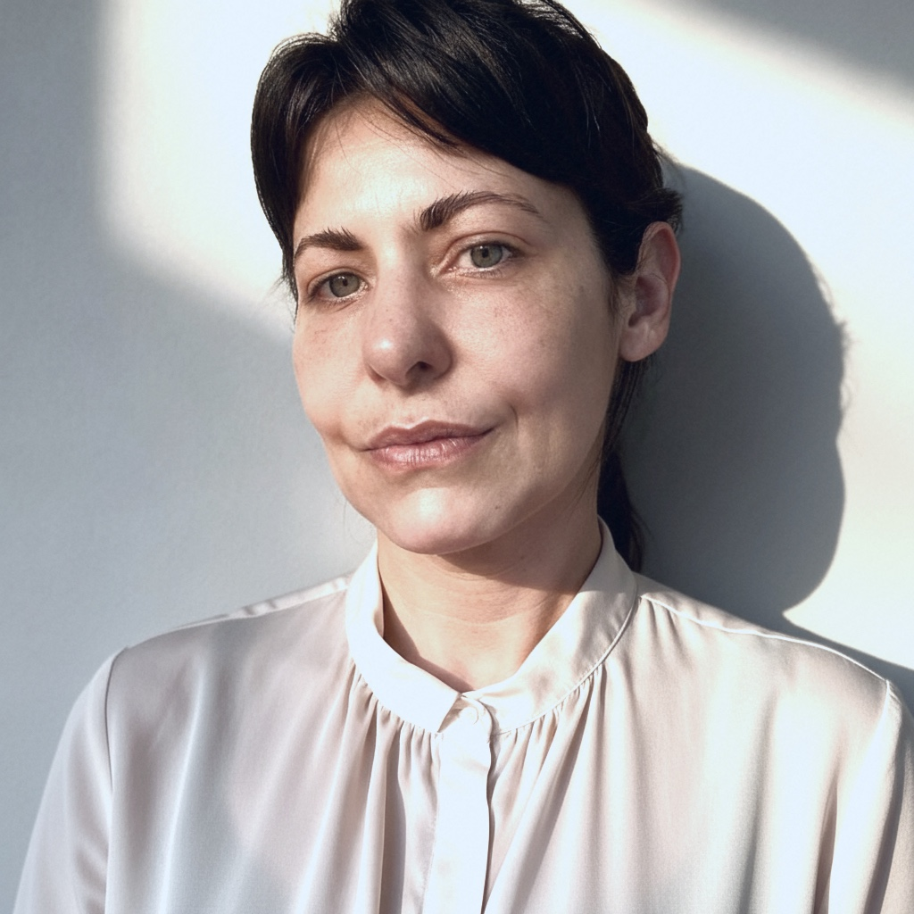

Liderança ADA

Tatiane Gonzalez
- Função
- Direção Executiva · Cofundadora ADA
- Formação
- Mestre em Sociologia (UNICAMP) · Sociologia e Política (FESPSP)
- Empresa
- Titular da Tatiane G L da Silva Produção Cultural — CNPJ 20.420.653/0001-37
Diretora criativa e pesquisadora, atua desde 2013 em videomapping, instalações interativas e experiências imersivas. Cofundou o ADA, onde cria narrativas que integram imagem, luz, som e arquitetura.

Caio Fazolin
- Função
- Direção de Arte · Cofundador ADA
- Atuação
- Direção de arte e criação visual em videomapping, instalações imersivas e turnês premiadas
- Cases
- Times Square (NY) · COP28 Dubai · Virada Cultural SP · Liniker · Titãs · Netflix · Sony Pictures
Artista visual e diretor de arte com 25 anos de experiência, cofundou o ADA em 2015. Assina a linguagem visual de projetos de grande escala — de videomappings em fachadas históricas a conteúdos de turnês premiadas.